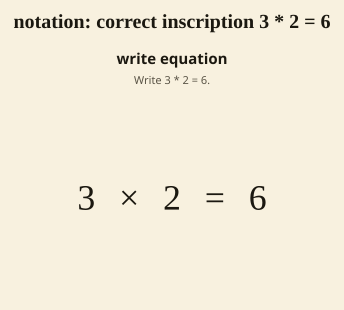
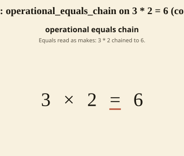
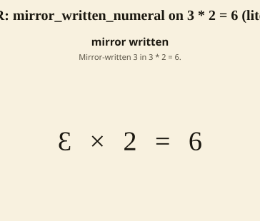

Standards: (none encoded) Representative equation: 3 * 2 = 6
This is the notation monitoring chart for the lesson: the productive written inscription a child should produce, beside the likely written-work deformations to watch for — a reversed numeral, an equals sign read as “makes”, a transposed answer — each drawn over the lesson's representative equation. Each deformation is a labeled misconception, gated through the representation grammar's misconception lane (deformation_spec_evidence(notation, ...) with mode: misconception) — never an unflagged inscription. The diff between the correct inscription and a deformation is one field (one flipped glyph, or one appended mark). Logic in curriculum/im/lesson_notation_chart.pl; render projected through more-zeeman/render/drawer.js (the notation format).
This lesson hosts a notation chart through its multiplication operation. Each deformation is admitted by cited evidence and rendered over a representative equation, not counted as an instance in this lesson.


